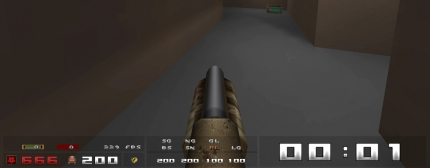

Creating a custom HUD
This is a simple tutorial about how to create your own custom HUD with EzQuake.
Step 1
First of all we need ezquake_URL
Step 2
We need to remove the old HUD and start with a fresh/clear screen. We do this by typing scr_newhud 1.
Step 3
The easiest way of making a HUD you need to see all items (armors/weapons/powerups). You could go play on some server and take everything you need, or just simply type hud_planmode 1.
Step 4
We simple start of with the most important stuff, showing you’re health and armor. Type hud_health_show 1, hud_armor_show 1 they both will show up on the top-left side of the screen. Of course you don’t want them there so we need to move them. Type hud_health_pos_x this sets the horizontal position of health level and hud_health_pos_y to set the vertical position of health level.
Step 5
If you find your HUD-items to large or to small, you can adjust it by using hud_health_scale / hud_armor_scale command. I think you know enough of the basic settings.
Step 6
Its also possible to make groups. The command is hud_group1_show 1 You can change the width and height of the group hud_group1_width xxx and hud_group1_height xxx. It also possible to make the group darker/lighter hud_group_frame x. And to move it use the hud_group1_pos_x and hud_group1_pos_y commands again.
Step 7
You can find a list of all available HUD-commands right here. Of course I made a HUD myself, you can find it over here.
//MQWCL HUD hud_ammo1_pos_x "233" hud_ammo1_pos_y "535" hud_ammo1_scale "0.4" hud_ammo1_show "1" hud_ammo2_pos_x "269" hud_ammo2_pos_y "535" hud_ammo2_scale "0.4" hud_ammo2_show "1" hud_ammo3_pos_x "305" hud_ammo3_pos_y "535" hud_ammo3_scale "0.4" hud_ammo3_show "1" hud_ammo4_pos_x "338" hud_ammo4_pos_y "535" hud_ammo4_scale "0.4" hud_ammo4_show "1" hud_ammo_pos_x "430" hud_ammo_pos_y "385" hud_armor_pos_x "30" hud_armor_pos_y "529" hud_armor_scale "0.8" hud_armor_show "1" hud_armor_style "2" hud_face_pos_x "100" hud_face_pos_y "532" hud_face_scale "0.6" hud_face_show "1" hud_fps_decimals "0" hud_fps_pos_x "-430" hud_fps_pos_y "-30" hud_fps_show "1" hud_frags_pos_x "436" hud_frags_pos_y "510" hud_frags_space_x "4" hud_gameclock_align_y "top" hud_gameclock_pos_x "-28" hud_gameclock_pos_y "502" hud_gameclock_scale "1.8" hud_gameclock_show "1" hud_group1_alpha "0,2" hud_group1_frame "0.2" hud_group1_height "22" hud_group1_pos_x "5" hud_group1_pos_y "528" hud_group1_show "1" hud_group1_width "176" hud_group2_frame "0.2" hud_group2_height "24" hud_group2_pos_x "5" hud_group2_pos_y "501" hud_group2_show "1" hud_group2_width "210" hud_group3_frame "0.2" hud_group3_height "25" hud_group3_pos_x "218" hud_group3_pos_y "525" hud_group3_show "1" hud_group3_width "165" hud_group4_frame "0.2" hud_group4_height "27" hud_group4_pos_x "218" hud_group4_pos_y "501" hud_group4_show "1" hud_group4_width "165" hud_group5_frame "0.2" hud_group5_height "22" hud_group5_pos_x "184" hud_group5_pos_y "528" hud_group5_show "1" hud_group5_width "31" hud_group6_frame "0.2" hud_group6_height "49" hud_group6_pos_x "386" hud_group6_pos_y "501" hud_group6_show "1" hud_group6_width "248" hud_group7_frame "0.2" hud_group7_height "3" hud_group7_pos_x "386" hud_group7_pos_y "533" hud_group7_width "248" hud_gun2_pos_x "240" hud_gun2_pos_y "-40" hud_gun2_show "1" hud_gun2_style "3" hud_gun3_pos_x "-16" hud_gun3_pos_y "11" hud_gun3_show "1" hud_gun3_style "3" hud_gun4_pos_x "20" hud_gun4_pos_y "-11" hud_gun4_show "1" hud_gun4_style "3" hud_gun5_pos_x "-17" hud_gun5_pos_y "11" hud_gun5_show "1" hud_gun5_style "3" hud_gun6_pos_x "20" hud_gun6_pos_y "-11" hud_gun6_show "1" hud_gun6_style "3" hud_gun7_pos_x "-16" hud_gun7_pos_y "11" hud_gun7_show "1" hud_gun7_style "3" hud_gun8_pos_x "17" hud_gun8_show "1" hud_gun8_style "3" hud_health_pos_x "120" hud_health_pos_y "529" hud_health_scale "0.8" hud_health_show "1" hud_iarmor_pos_x "10" hud_iarmor_pos_y "532" hud_iarmor_scale "0.6" hud_iarmor_show "1" hud_pent_align_x "center" hud_pent_align_y "bottom" hud_pent_place "screen" hud_pent_show "1" hud_ping_blink "0" hud_ping_pos_x "400" hud_ping_show_pl "0" hud_quad_align_x "center" hud_quad_align_y "bottom" hud_quad_place "screen" hud_quad_pos_x "-120" hud_quad_pos_y "-3" hud_quad_show "1" hud_ring_align_x "center" hud_ring_align_y "bottom" hud_ring_place "screen" hud_ring_pos_x "-120" hud_ring_pos_y "-5" hud_ring_show "1" hud_teamfrags_align_x "center" hud_teamfrags_align_y "bottom" hud_teamfrags_pos_x "-245" hud_teamfrags_pos_y "-29" hud_teamfrags_show "1" hud_teamfrags_space_x "20"
*** This HUD is created for -conwidth 640 its not compatible with other resolutions ***
And this is how it looks now:
